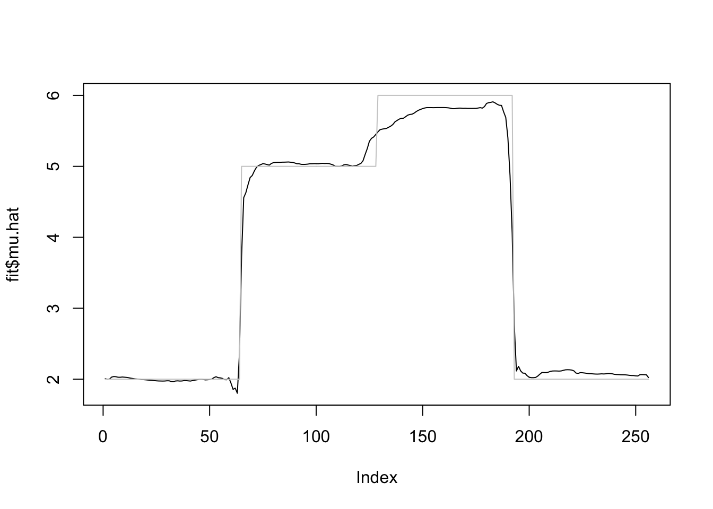
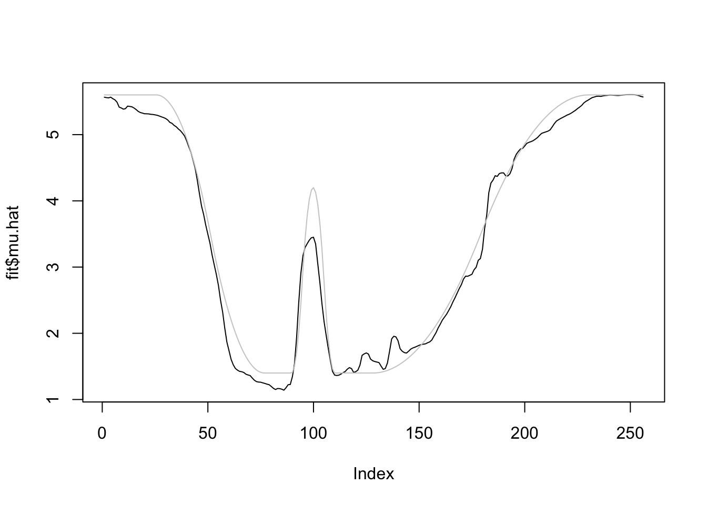

Last updated: 2019-02-27
workflowr checks: (Click a bullet for more information) ✔ R Markdown file: up-to-date
Great! Since the R Markdown file has been committed to the Git repository, you know the exact version of the code that produced these results.
✔ Environment: empty
Great job! The global environment was empty. Objects defined in the global environment can affect the analysis in your R Markdown file in unknown ways. For reproduciblity it’s best to always run the code in an empty environment.
✔ Seed:
set.seed(20180501)
The command set.seed(20180501) was run prior to running the code in the R Markdown file. Setting a seed ensures that any results that rely on randomness, e.g. subsampling or permutations, are reproducible.
✔ Session information: recorded
Great job! Recording the operating system, R version, and package versions is critical for reproducibility.
✔ Repository version: 24643af
wflow_publish or wflow_git_commit). workflowr only checks the R Markdown file, but you know if there are other scripts or data files that it depends on. Below is the status of the Git repository when the results were generated:
Ignored files:
Ignored: .DS_Store
Ignored: .Rhistory
Ignored: .Rproj.user/
Ignored: data/.DS_Store
Untracked files:
Untracked: analysis/chipexoeg.Rmd
Untracked: analysis/efsd.Rmd
Untracked: analysis/pre0221.Rmd
Untracked: analysis/talk1011.Rmd
Untracked: data/chipexo_examples/
Untracked: data/chipseq_examples/
Untracked: docs/figure/pre0221.Rmd/
Untracked: talk.Rmd
Untracked: talk.pdf
Unstaged changes:
Modified: analysis/binomial.Rmd
Modified: analysis/fda.Rmd
Modified: analysis/glmcovariate.Rmd
Modified: analysis/protein.Rmd
Modified: analysis/r2.Rmd
Modified: analysis/r2b.Rmd
Modified: analysis/sigma.Rmd
| File | Version | Author | Date | Message |
|---|---|---|---|---|
| Rmd | 24643af | Dongyue Xie | 2019-02-27 | wflow_publish(“analysis/covariatevst.Rmd”) |
Consider estimating spatially-structured \(\mu_t\) from Poisson sequence: \[Y_t\sim Poisson(\lambda_t).\] We assume that \(\lambda_t\) satisfies \[\lambda_t+c=(X_t'\beta+\mu_t)^2\], where \(X_t\) are \(p-\)dimensional covaraites and \(\beta\) is unknown coefficients.
Apply variance stablizing transformation(VST) to \(Y_t\). Let the transformed data be \(\tilde Y_t=\sqrt{Y_t+c}\) and apply smash.gaus allowing covariates method to \(\tilde Y_t\), which gives \(\hat\mu_t\) and \(\hat\beta\). The recovered smooth mean structure is given by \((\hat\mu_t)^2-c\).
Poisson sequence: Given \(\mu_t, t=1,2,\dots,T\), \(\lambda_t=(\mu_t+X_t'\beta+N(0,\sigma^2))^2-c\), generate \(Y_t\sim Poisson(\lambda_t)\).
The length of sequence \(T\) is set to be 256, covariates \(X_t\) are generate from \(N(0,I_{p\times p})\), and \(\beta\) is chosen to be \((1,2,-3,-4,5)\) then normalized to have unit norm. Signal-to-noise ratio(\(var(X\beta)/\sigma^2\)) is 3.
library(smashr)
smashgen_vst_x=function(y,X,sigma,c=3/8){
yy=sqrt(y+c)
Eyy=mean(yy)
yys=yy-Eyy
xx=apply(X, 2, function(x){scale(x,scale = F)})
X=xx
H=solve(t(X)%*%X)%*%t(X)
beta.hat=H%*%yys
res=yys-X%*%beta.hat
if(missing(sigma)){
mu.hat=smash.gaus(res+Eyy)
}else{
mu.hat=smash.gaus(res+Eyy,sigma=sqrt(1/4+sigma^2))
}
yy2=yy-mu.hat
beta.hat=H%*%yy2
res=yy-X%*%beta.hat
if(missing(sigma)){
mu.hat=smash.gaus(res)
}else{
mu.hat=smash.gaus(res,sigma=sqrt(1+sigma^2))
}
yy3=yy-mu.hat
beta.hat=H%*%yy3
return(list(beta.hat=beta.hat,mu.hat=mu.hat))
}mu=c(rep(2,64), rep(5, 64), rep(6, 64), rep(2, 64))
beta=c(1,2,-3,-4,5)
beta=beta/norm(beta,'2')
n=length(mu)
p=length(beta)
SNR=3
seed=12345
set.seed(seed)
X=matrix(rnorm(n*p,0,1),nrow=n,byrow = T)
Xbeta=X%*%beta
sigma=sqrt(var(Xbeta)/SNR)
lambda=(mu+Xbeta+rnorm(n,0,sigma))^2
yt=rpois(n,lambda)
fit=smashgen_vst_x(yt,X,,0)
plot(beta,fit$beta.hat,ylab = 'beta.hat',xlab = 'True Beta')
abline(a=0,b=1)plot(fit$mu.hat,type='l',ylim = range(c(mu,fit$mu.hat)))
lines(mu,col='grey80')
m=seq(0,1,length.out = 256)
h = c(4, 5, 3, 4, 5, 4.2, 2.1, 4.3, 3.1, 5.1, 4.2)
w = c(0.005, 0.005, 0.006, 0.01, 0.01, 0.03, 0.01, 0.01, 0.005,0.008,0.005)
t=c(.1,.13,.15,.23,.25,.4,.44,.65,.76,.78,.81)
f = c()
for(i in 1:length(m)){
f[i]=sum(h*(1+((m[i]-t)/w)^4)^(-1))
}
mu=f*5
beta=c(1,2,-3,-4,5)
beta=beta/norm(beta,'2')
n=length(mu)
p=length(beta)
SNR=3
seed=12345
set.seed(seed)
X=matrix(rnorm(n*p,0,1),nrow=n,byrow = T)
Xbeta=X%*%beta
sigma=sqrt(var(Xbeta)/SNR)
lambda=(mu+Xbeta+rnorm(n,0,sigma))^2
yt=rpois(n,lambda)
fit=smashgen_vst_x(yt,X,,0)
plot(beta,fit$beta.hat,ylab = 'beta.hat',xlab = 'True Beta')
abline(a=0,b=1)plot(fit$mu.hat,type='l',ylim = range(c(mu,fit$mu.hat)))
lines(mu,col='grey80')f=function(x){return(0.5 + 2*cos(4*pi*x) + 2*cos(24*pi*x))}
mu=f(1:256/256)
mu=mu-min(mu)
beta=c(1,2,-3,-4,5)
beta=beta/norm(beta,'2')
n=length(mu)
p=length(beta)
SNR=3
seed=12345
set.seed(seed)
X=matrix(rnorm(n*p,0,1),nrow=n,byrow = T)
Xbeta=X%*%beta
sigma=sqrt(var(Xbeta)/SNR)
lambda=(mu+Xbeta+rnorm(n,0,sigma))^2
yt=rpois(n,lambda)
fit=smashgen_vst_x(yt,X,,0)
plot(beta,fit$beta.hat,ylab = 'beta.hat',xlab = 'True Beta')
abline(a=0,b=1)plot(fit$mu.hat,type='l',ylim = range(c(mu,fit$mu.hat)))
lines(mu,col='grey80')r=function(x,c){return((x-c)^2*(x>c)*(x<=1))}
f=function(x){return(0.8 - 30*r(x,0.1) + 60*r(x, 0.2) - 30*r(x, 0.3) +
500*r(x, 0.35) -1000*r(x, 0.37) + 1000*r(x, 0.41) - 500*r(x, 0.43) +
7.5*r(x, 0.5) - 15*r(x, 0.7) + 7.5*r(x, 0.9))}
mu=f(1:256/256)
mu=mu*7
beta=c(1,2,-3,-4,5)
beta=beta/norm(beta,'2')
n=length(mu)
p=length(beta)
SNR=3
seed=12345
set.seed(seed)
X=matrix(rnorm(n*p,0,1),nrow=n,byrow = T)
Xbeta=X%*%beta
sigma=sqrt(var(Xbeta)/SNR)
lambda=(mu+Xbeta+rnorm(n,0,sigma))^2
yt=rpois(n,lambda)
fit=smashgen_vst_x(yt,X,,0)
plot(beta,fit$beta.hat,ylab = 'beta.hat',xlab = 'True Beta')
abline(a=0,b=1)plot(fit$mu.hat,type='l',ylim = range(c(mu,fit$mu.hat)))
lines(mu,col='grey80')
sessionInfo()R version 3.5.1 (2018-07-02)
Platform: x86_64-apple-darwin15.6.0 (64-bit)
Running under: macOS High Sierra 10.13.6
Matrix products: default
BLAS: /Library/Frameworks/R.framework/Versions/3.5/Resources/lib/libRblas.0.dylib
LAPACK: /Library/Frameworks/R.framework/Versions/3.5/Resources/lib/libRlapack.dylib
locale:
[1] en_US.UTF-8/en_US.UTF-8/en_US.UTF-8/C/en_US.UTF-8/en_US.UTF-8
attached base packages:
[1] stats graphics grDevices utils datasets methods base
other attached packages:
[1] smashr_1.2-0
loaded via a namespace (and not attached):
[1] Rcpp_1.0.0 knitr_1.20 whisker_0.3-2
[4] magrittr_1.5 workflowr_1.1.1 REBayes_1.3
[7] MASS_7.3-51.1 pscl_1.5.2 doParallel_1.0.14
[10] SQUAREM_2017.10-1 lattice_0.20-35 foreach_1.4.4
[13] ashr_2.2-7 stringr_1.3.1 caTools_1.17.1.1
[16] tools_3.5.1 parallel_3.5.1 grid_3.5.1
[19] data.table_1.11.6 R.oo_1.22.0 git2r_0.23.0
[22] iterators_1.0.10 htmltools_0.3.6 assertthat_0.2.0
[25] yaml_2.2.0 rprojroot_1.3-2 digest_0.6.18
[28] Matrix_1.2-14 bitops_1.0-6 codetools_0.2-15
[31] R.utils_2.7.0 evaluate_0.11 rmarkdown_1.10
[34] wavethresh_4.6.8 stringi_1.2.4 compiler_3.5.1
[37] Rmosek_8.0.69 backports_1.1.2 R.methodsS3_1.7.1
[40] truncnorm_1.0-8 This reproducible R Markdown analysis was created with workflowr 1.1.1